Getting outputs and post-processing
So far we have built a model of the plate with a hole: a quarter model (Part 2: Taking Advantage of Symmetries) with a partitioned mesh of quadratic elements (Part 3: Getting a Good Mesh). Now it is time to actually use the results. In this part we learn how to:
In Part 5: Stress Concentrations we then use these outputs to compute a few more interesting things.
Before setting up any output, we need sets. A set is simply a named group of geometry (or nodes/elements). It can be a vertex, edges or a face (or a combination of all of them). By default, the software creates sets everywhere: to apply boundary conditions, to request outputs and to select things in post-processing. When you pick geometry directly in a dialog, Abaqus makes an internal set for you, but giving them a name makes the model much easier to read and to post-process for a human being (and AI probably).
In the Part module, go to \(\text{Tools} \rightarrow \text{Set} \rightarrow \text{Create}\), choose Geometry and create:
Bottom_edge: the bottom edge, from the hole to the free edge (\(y = 0\), \(5 \le x \le 10\)).Hole: the two arcs of the hole.RP: the reference point we created in the previous tutorial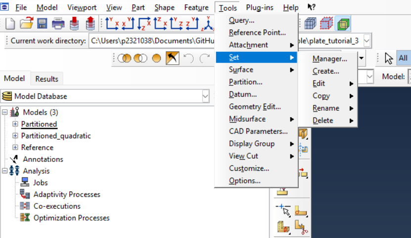
The symmetry conditions from Part 2 can also have named sets. If they are already created, all you need to do is find them in the model tree and rename them. The Bottom_edge would already be a set used for the bottom symmetry.
Abaqus writes two kinds of output to the .odb file:
You can ask Abaqus to save this information more often, or to save more variables, but the .odb file then gets much larger. As always, it depends on your goal. Both these options are set in the Field Output Request and History Output Request dialogs (see below under the “Frequency” field).
The default field output already contains the stress S, the displacement U and the reaction force RF, so we do not need to change it. For the force-displacement curve, we want the displacement U2 and the reaction force RF2 of the reference point at every increment. That is a history output, and it takes two steps:
RP.and set Domain: Set → RP, Frequency: Every n increments, n = 1, and in the variables list tick U2 (under Displacement) and RF2 (under Forces/Reactions). You can also just type U2, RF2 in the text box.
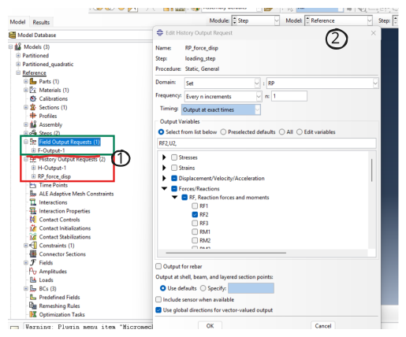
Finally, a static step usually runs in a single increment if the problem is linear, which would give a line with only two points. To get more points, edit loading_step and in the Incrementation tab set the initial and maximum increment size to 0.1. This gives 10 increments, but this is not necessary for now.
Now create the job and submit it as before.
When the job finishes, open the results in the Visualization module. Before extracting any numbers, it is worth knowing how Abaqus draws them, because the picture is not just “the result”: it depends on a few settings.
Click Plot Contours on Deformed Shape
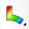
. By default Abaqus shows the von Mises stress (S, Mises), which tells you whether a material yields. Our plate is pulled along \(y\), so here the most useful stress is the one in the loading direction, \(\sigma_{22}\). Choose it with \(\text{Field Output} \rightarrow\) S, component S22. Abaqus numbers the directions instead of naming them. For our purposes we have: 1 = \(x\), 2 = \(y\), 3 = \(z\), which are the global directions. So S11, S22 and S12 are \(\sigma_{xx}\), \(\sigma_{yy}\) and \(\tau_{xy}\), and the same goes for displacements (U1, U2) and reaction forces (RF1, RF2).
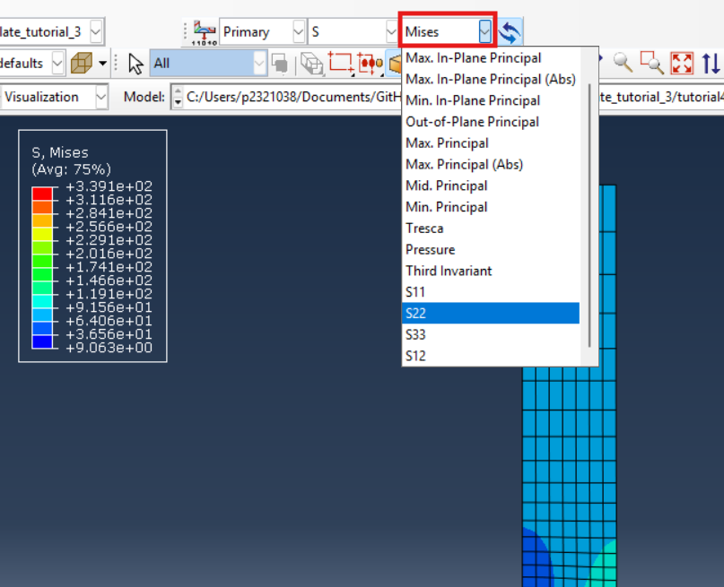
Figure 4 shows the results of previous simulation. Far from the hole, the stress is almost uniform. Close to the hole it rises quickly, with the maximum at the point of the hole closest to the free edge (on the Bottom_edge set). Note how small the region with high stress is: this is why we needed the fine mesh of Part 3. This is what we call a stress concentration point which, we will see more about that in Part 5: Stress Concentrations.
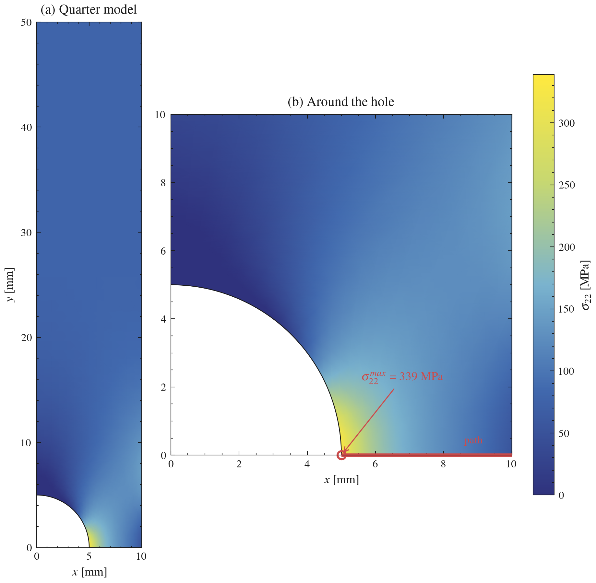
With a fine mesh, it can be quite hard to see the contours. In this cases, we can change the display settings of Abaqus. Most display settings are in the Common Options menu:
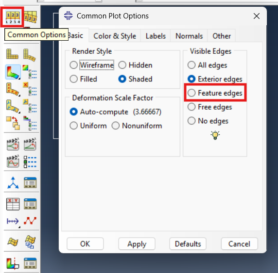
Abaqus computes stresses at the integration points (see Gaussian quadrature) which are inside each element and then everything is extrapolated to the element’s nodes. A node shared by four elements therefore gets four different values or contributions, one from each element. To draw a smooth contour, Abaqus averages them, but only if they are close enough. This is what it means when you see (Avg: 75%) below the legend.
This rule is set in:
\[\text{Results} \; \rightarrow \; \text{Options} \; \rightarrow \; \text{Computation} \; \rightarrow \; \text{Averaging threshold (\%)}\]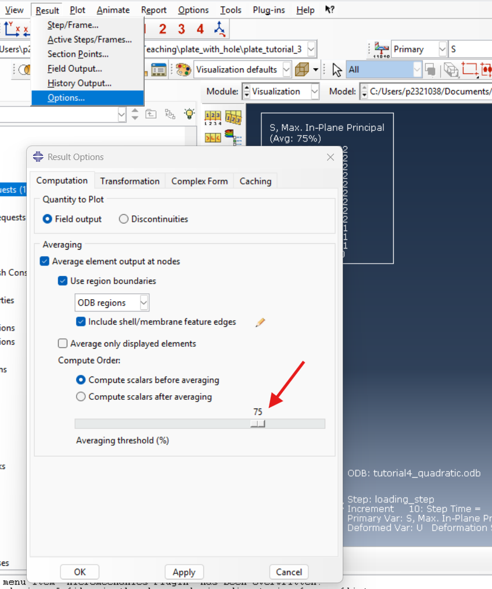
At every node, Abaqus checks how much the element values differ, compared with the range of the whole plot:
Large difference (above the threshold): each element keeps its own value and you see a jump at the element boundary.
Figures Figure 7 and Figure 8 show what this does near the hole, first for the linear elements of Part 3 and then for the quadratic elements we use here, each with averaging off, 50 % and 75 %.
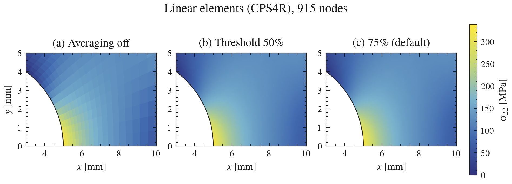
With averaging off (a), the linear elements show a clear “patchwork”. Every element has its own, (almost) constant stress, and neighbouring elements disagree by up to 12 % (for this case in the highest gradient regions) of the stress range. In this case you can even see the boundary of elements with the mesh turned off. As soon as the threshold is above these 12 %, every node is averaged, so 50 % (b) and 75 % (c) give exactly the same smooth picture.
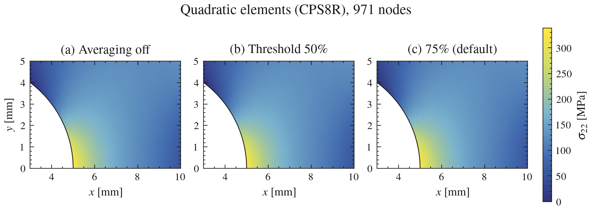
On the other hand, the quadratic elements are already quite smooth without averaging (a). This is due to their midside nodes allowing for the displacement to vary quadratically inside each element, so the stress is no longer constant. For this case, the neighbouring elements agree within 0.5 %, hence the threshold makes no visible difference here.
In general, 75 % is a sensible default. Because for a reasonable mesh, neighbouring elements agree well, so averaging only removes small, meaningless jumps and gives a clean picture. But if neighbouring elements disagree by a large fraction of the whole range, the jump is real information which needs to be seen. Of course this value is an arbitrary value which simply was adopted by the commercial FEM software programs and usually for 95% of the cases you don’t need to worry about it.
To read the value at a single node, use \(\text{Tools} \rightarrow \text{Query} \rightarrow \text{Probe Values}\) or , just click in the Probe Values icon in the module . Now click on the node at the edge of the hole. You should get about 339 MPa. You can also probe any element or node in your model as shown below.
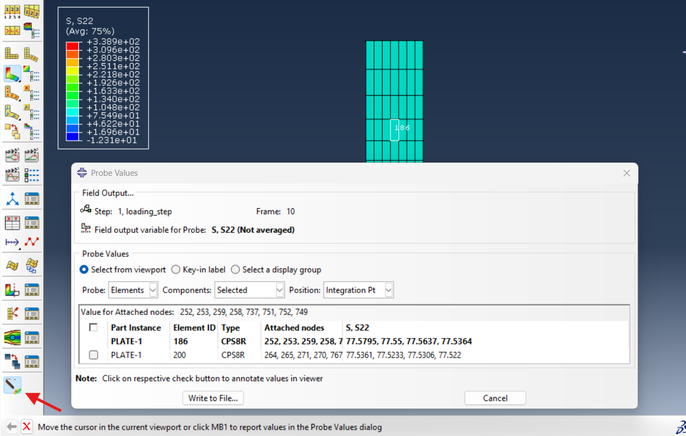
A contour plot is nice to look at results, but to really see how the stress changes away from the hole, it is much more useful to plot it along a line or a path. For this, go to:
\[\text{Tools} \; \rightarrow \; \text{Path} \; \rightarrow \; \text{Create} \; \rightarrow \; \text{Point list}\]and type the start and end points of the bottom edge: 5, 0, 0 and 10, 0, 0. With Node list you can instead pick the nodes in the viewport. For this case both methods should be equivalent.
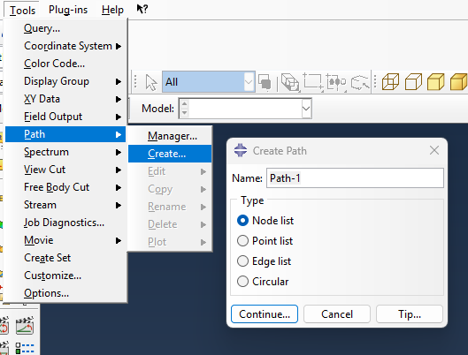
Then create the data along the path go to \(\text{Tools} \; \rightarrow \; \text{XY Data} \; \rightarrow \; \text{Create} \; \rightarrow \; \text{Path}\) or just click in the
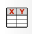
icon. Then select path.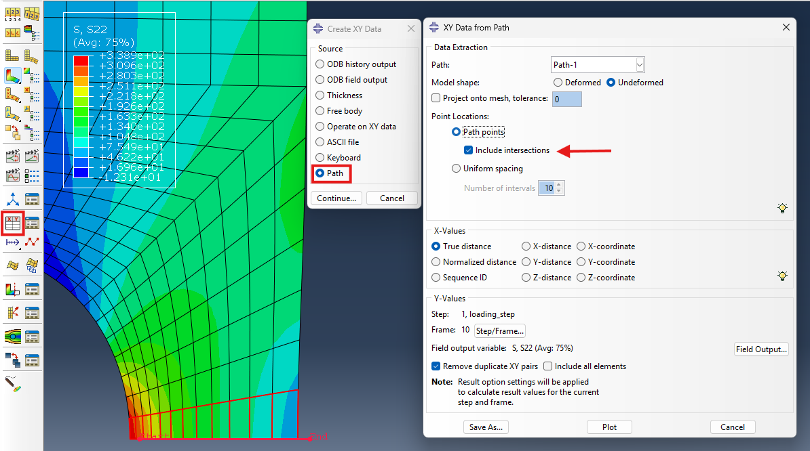
Select your path, choose X values: True distance, tick Include intersections (so you get a point at every node on the path) and in Field Output pick S22. Click Plot, and Save As to keep the following curve:
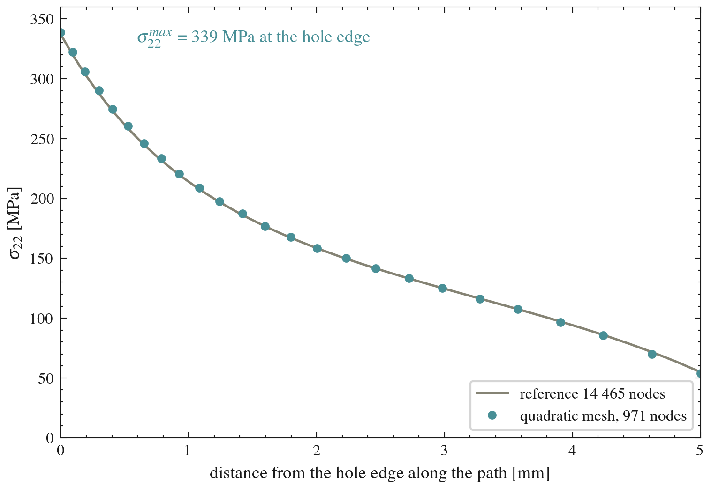
Figure 12 shows the result. The stress is highest at the edge of the hole (339 MPa) as we excepted. The grey line is the converged reference model of Part 3, and our 971-node mesh follows it closely.
If you remember, we requested history output earlier in the RP. We are now going to use it for the force–displacement curve. Go to:
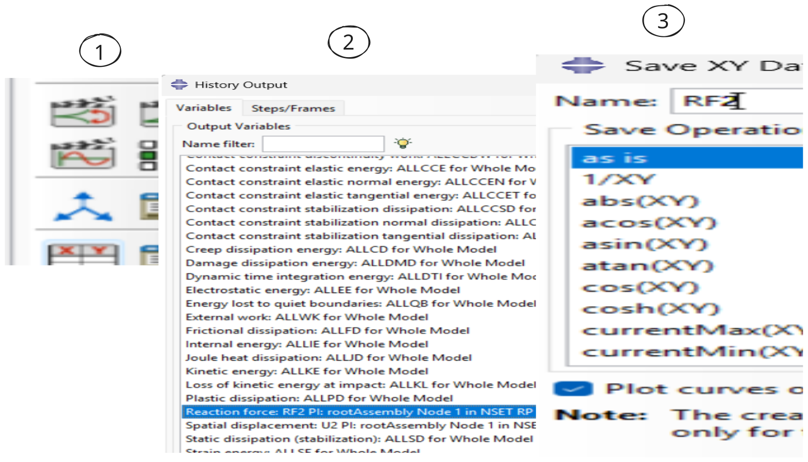
and save two curves: the Spatial displacement: U2 and the Reaction force: RF2, both at the node in set RP. These are both plotted against time. To plot one against the other, open the XY Data Manager, click Create → Operate on XY data and use:
combine( U2, RF2 )
This takes the first curve as \(x\) (the displacement U2) and the second as \(y\) (the RF2). Save it and plot it.
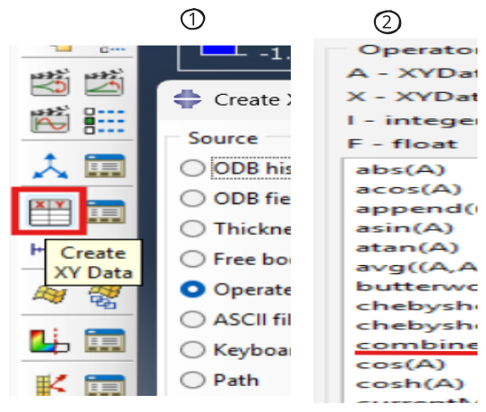
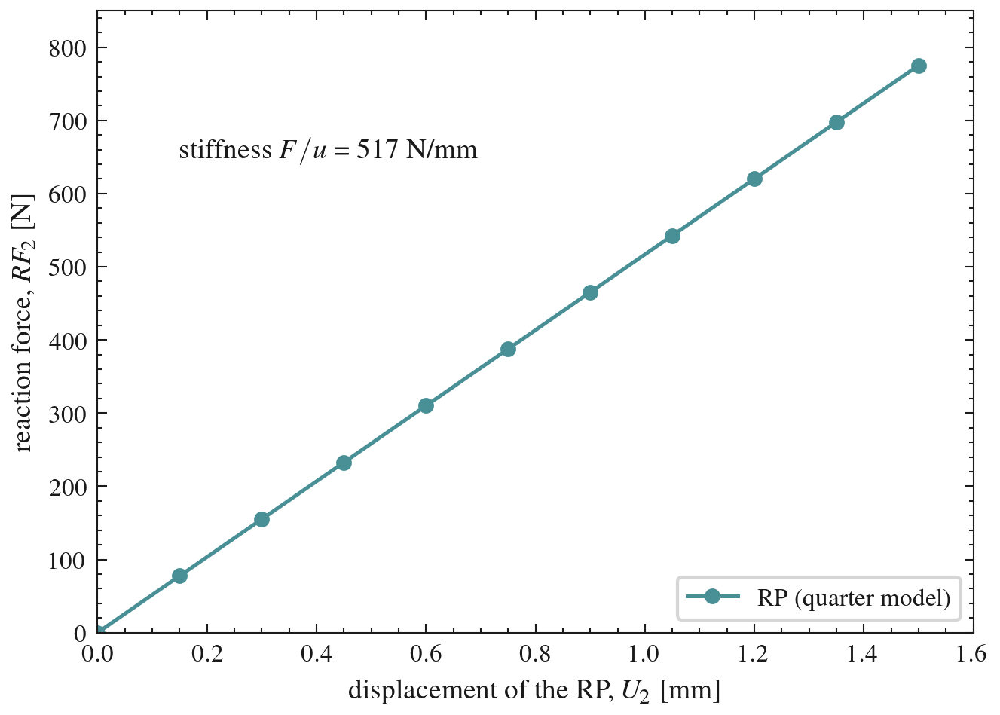
As expected for a linear elastic material, the curve in Figure 15 is a straight line, with a stiffness of 517 N/mm. In Part 6: Material Models we will change the material model and this curve will no longer be straight.
This is where the RP from Part 2 pays off. Since the total force is a single number at a single node, it is easy to access it. Without it, you would have to sum the reaction forces of all the nodes on the loaded edge which is obviously possible but more annoying and less clean.
To use the data outside Abaqus (Excel, Python, your report), go to \(\text{Report} \rightarrow \text{XY}\) and write the curve to a text file.
There is also a Excel plug-in which you can access in:
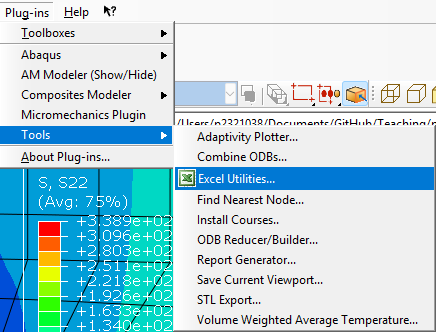
With the peak stress from the path and the force from the RP, we have everything we need to compute the stress concentration factor in Part 5: Stress Concentrations which we can follow next.